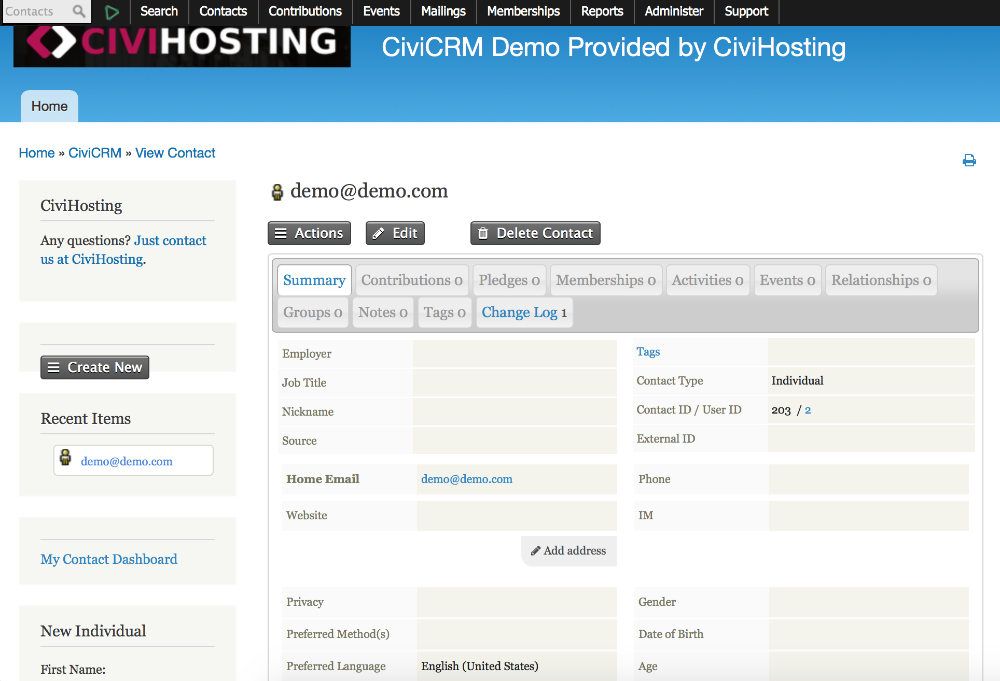

_role Since it's an academic course, all my teammates shared the equal workload. I was contactor, interviewerer, note taker, and designer at different periods in the project. I was also in charge of make the recommendations and presentation.
- _duration 8/ 2017 - 12/ 2017.
- _client Neutral Zone (NZ), a teen center for promoting teenage growth through artistic expression and leadership training
- _course Contextual Inquiry and Consulting Foundation, University of Michigan
- _partners Piaoyang Wang, Jillian Peacock, Matthew Thornton
- _scope Contextual Inquiry, Qualitative Research
_introducing
NZ provides fun programs for local teens
using customized CiviCRM system
CiviCRM is an open source, web-based management database specifically for nonprofit organizations. Since it's customized by Netural Zone, we call it CiviCRM nz.
Neutral Zone is a diverse, youth-driven teen center. Our client want to improve the use of CiviCRM to gather and manage information about programs and improve outreach and engagement with teens.
By conducting an evaluation of the CiviCRMnz through research and interviews, we will come up with recommendations so NZ can improve the use of system.
_user research
when we started,
we conduct background research on
NGO for teens and also CiviCRM itself
The purpose is to get to know more about our client and the web-based system.
NZ is a non-profit organizations aiming the teens. Like all the similar institutes, the finance relies on donors including parents and philanthropist.
CiviCRM is an open source, web-based data management software designed for non-profit organizations. It is highly expandable while it usually has tons of bugs. The current system NZ is using was specially modified by the developers.
our five interviews in NZ
covered teachers, directors and data developers
Before the interviews, we prepared the protocols for interviewees to let us keep on track to learn how CiviCRM works in NZ. Two of our team members were assigned to each interview - one as designated interviewer, and one as note taker.
Contextual inquiry also include observation on the users' behaviour, and even the artifacts and physical environment. We took about an hour for each interview to catch every single piece of information we can.
Sometimes it’s very quick. In a few minutes they will call or email back. Sometimes they will be able to somebody else that day. Sometimes it takes a few days or even a week or two. Sometimes we won’t hear back for a while.
-- Director A talking about tech support
Very rough...I have problem finding things that aren’t there that should be there.
-- Advisor B talking about daily use
we then used the affinity wall as interpretation tool
to organize findings in structure
After all the interviews, we replayed all the recordings together, and wrote down pieces of finding on yellow stickers. Putting stickers in different groups, we then sit and came up with higher-level conclusions on pink, blue and big yellow.

_reshape w/ recommendations
we brainstorm and
use evaluation table as methods
1/ with unstable CiviCRM, tech support
did not meet NZ’s needs, overall
It can take some time for IT to get back to us.
-- Devoloper A talking
Sometimes it’s very quick. In a few minutes they will call or email back. Sometimes they will be able to somebody else that day. Sometimes it takes a few days or even a week or two. Sometimes we won’t hear back for a while.
-- Director A talking
old-date software?
keep up-to-date!
CiviCRM is an open source software which is easy to customize. But it’s risky to do that because it will be hard to upgrade after changing the codes.
Our recommendation is to ensure Neutral Zone’s CiviCRM is a branch of original open source CiviCRM using user-defined keywords and flexible plugins, instead of modifying the core directly, so it can be updated as well as the original version.
no reply?
new protocal!
Usually it’s a long time to receive a feedback from the developer, as well as for problems to be fixed.
Our recommendation is to create an issue-feedback process between Neutral Zone and the current tech developer.
one person only?
hire volunteers!
Now NZ transfers to another person as the developer. But there’s only one person in charge.
Our recommendation is to invite developers from University of Michigan as supplementary tech support.
2/ rosters and reports are not functioning properly
while the whole system is hard to use
Very rough...I have problem finding things that aren’t there that should be there.
-- Advisor B talking
It’s a little daunting...you see all this and you scroll and these fields are really big and some of them are hidden and you say ‘Do I want program rosters 15-16, where’s 16-17, it’s gone’, so there are some awkward things about using it.
-- Devoloper B talking
unusable report?
customize it!
Now reports and rosters cannot be generated automatically nor meet staff's specific needs.
Our recommendation is to improve the power of filters already in CiviCRM and allow user to create customized filtered report.
bad reachability?
improve interface!
The searching ability is limited and there are too many unnecessary navigation tabs.
Our recommendation is to write a plugin for more powerful searching ability, and also reduce unnecessary navigation bars.
miss check-in?
more scanner!
Teen can miss check in to the program at the entrance. And now it only allow teachers to add check-in information manually.
Our recommendation is to use more physical scanners or new app on their iPad to allow check-in in classrooms by scanning teen's QR code.
3/ while previous users have difficult in using CiviCRM,
new users are not motivated to learn to use it
People are frustrated that the system CiviCRM isn't working.
-- User with 3 years experiences
It’s easier to use Excel now, I don’t really trust CiviCRM.
-- User with no experiences
untrust?
provide help + training!
Now the usability issues involved to trust and relying problems. Since NZ really want to go back to work on CiviCRM easily again, we recommend that NZ should come up with some training material about CiviCRM for new employees. Offering some help tips on mostly used pages online may also help.